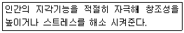

화훼장식기능사 (2013-01-27 기출문제)
1과목: 화훼장식재료
1. 다음 중 한해살이 초화류가 아닌 것은?
- 과꽃
- 천일홍
- 아게라텀
- 디기탈리스
(정답률: 47%)

2. 철사의 표준치수 중 가장 굵은 것은?
- ＃24
- ＃22
- ＃20
- ＃18
(정답률: 96%)
3. 다음 중 백합과 식물인 나리가 속하는 구근류의 형태는?
- 알줄기
- 뿌리줄기
- 비늘줄기
- 덩이뿌리
(정답률: 57%)
4. 다음 중 일장반응에 따라 화훼 식물의 분류에서 장일식물에 속하는 것은?
- 금어초
- 포인세티아
- 맨드라미
- 코스모스
(정답률: 48%)
5. 식물을 “보통명”으로 사용 시 단점으로 보기 어려운 것은?
- 학명에 비해 부적합한 것이 많다.
- 전 세계 사람이 통용어로 사용할 수 없다.
- 다른 나라 언어로 되어 있어서 부르거나 기억하기 어렵다.
- 같은 식물을 다른 이름으로 부르거나 다른 식물을 같은 이름으로 부르는 사례가 있어 혼돈을 가져온다.
(정답률: 66%)
6. 도구 및 부재료의 보관 방법으로 적합하지 않은 것은?
- 리본 및 포장지는 광선에 의해 변색되기 쉬우므로 광과 습기가 들어가지 않는 장소에 보관한다.
- 스프레이는 화재 위험이 없는 곳에 보관한다.
- 플로랄 테이프는 접착성 물질이 굳지 않도록 따뜻한 곳에 보관한다.
- 플로랄 폼은 상자에 넣은 채로 건조한 곳에 보관한다.
(정답률: 92%)
7. 화훼를 용도에 따라 절화용, 절지용, 절엽용으로 구분할 때, 다음 중 절화용으로 짝지어지지 않은 것은?
- 프리지아, 꽃창포, 장미
- 칼라, 용담, 델피니움
- 공작초, 산수유, 유칼립툽스
- 튤립, 국화, 알스트로메라아
(정답률: 67%)
8. 식물의 기관 중 줄기의 일반적인 역할로 옳은 것은?
- 광합성과 증산작용
- 양분과 수분을 흡수
- 식물체를 지탱
- 과실과 종자 형성
(정답률: 78%)
9. 노지화단에서 재배할 수 있는 숙근성 초화류 식물로만 나열된 것은?
- 패랭이, 마가렛
- 샐비어, 시네라리아
- 꽃창포, 원추리
- 디기탈리스, 게베라
(정답률: 65%)
10. 다음 중 학명의 연결이 틀린 것은?
- 금잔화 : Calendula arvensis L.
- 봉선화 : Impatiens balsamina L.
- 팬지 : Viola tricolor L.
- 과꽃 : vinca rosea L.
(정답률: 54%)
11. 다음 중 섬유질과 규산질이 많고 수분이 적어 자연건조 후 변형이 잘 되지 않는 식물은?
- 밀집꽃
- 작약
- 아이리스
- 카네이션
(정답률: 69%)
12. 디자인으로 본 잎의 형태에서 안정간과 무게감을 주는 역할을 하는 덩어리 잎(mass foliage)으로 볼 수 없는 것은?
- 고무나무
- 드라세나
- 크로톤
- 스킨답서스
(정답률: 44%)
13. 상업적인 디스플레이용 화훼장식의 특징으로 거리가 먼 것은?
- 고객으로 하여금 상품을 구입하도록 동기를 만들어 준다.
- 예술가로서 또는 화훼장식전문가로서의 홍보 와 아이디어를 선보인다.
- 단순한 공간장식보다는 상업공간의 이미지 전달과 홍보를 위한 시선 집중을 유도한다.
- 계절별 주제를 잡아 이에 어울리는 화훼식물 을 도입하는 경우가 많다.
(정답률: 73%)
14. 다음 중 화훼재료의 분류에 대한 설명으로 옳지 않은 것은?
- 파종 후 1년 이내에 개화 결실하여 일생을 마치는 화초를 한해살이 초화라 한다.
- 겨울이 되면 지상부의 잎·줄기는 말라죽지만, 지하부의 뿌리는 계속 남아 이듬해 생육을 계속하는 초본성 화훼를 숙근초라고 한다.
- 식물체의 잎, 줄기, 뿌리 등에 영양분이 저장 되어 비대해진 화초를 다육식물이라 한다.
- 잎의 모양, 색, 무늬 등의 아름다움을 관상하는 식물을 관화식물이라 한다.
(정답률: 70%)
15. 다음 중 매스 플라워(mass flower)로 볼 수 없는 것은?
- 글라디올러스
- 장미
- 카네이션
- 수국
(정답률: 76%)
16. 테이블 장식품의 제작 시 유의사항으로 옳지 않은 것은?
- 테이블의 모양과 크기를 확인한다.
- 컨셉트에 맞추어 꽃 소재를 선택하고 화형을 정한다.
- 마주 앉은 사람의 시선을 가리지 않게 디자인 한다.
- 테이블의 정중앙에만 용기가 위치해야 한다.
(정답률: 95%)
17. 동양식 꽃꽂이에서 제 1주지의 길이는 화기의 길이(가로)와 높이(세로)를 더한 길이의 몇 배가 적당한가?
- 1배
- 1.5~2배
- 2.5~3.5배
- 5~7배
(정답률: 86%)
18. 화분 밑의 배수공을 통해 물이 모세현상으로 스며 올라가게 하는 관수방법은?
- 점적관수
- 저면관수
- 살수관수
- 지중관수
(정답률: 92%)
19. 과꽃이나 소국 등으로 부케(bouquet)를 제작할 때, 와이어 끝을 1㎝ 가량 구부려서 제작하는 철사처리 방법은?
- 후킹(hooking)
- 소잉(sewing)
- 피어싱(piercing)
- 트위스팅(twisting)
(정답률: 88%)
20. 크기, 색, 질감 등의 요소에 점진적인 변화를 주어 배열하는 기법으로 꽃을 배치할 때 중심에서 바깥으로 벗어나면서 어두운 색에서 점진적으로 밝은 색으로 배치하는 방법은?
- 프레이밍
- 새도잉
- 시퀀싱
- 조닝
(정답률: 72%)
2과목: 화훼장식 제작 및 유지관리
21. 식물의 뿌리 흡수기능이 약해져서 초세를 빨리 회복하기 위해 액체비료를 식물 지상부에 살포하려고 한다. 다음 중 시비방법으로 적당한 것은?
- 엽면시비
- 전면시비
- 부분시비
- 이산화탄소 시비
(정답률: 76%)
22. 에틸렌이 절화에 미치는 영향으로 가장 적당한 것은?
- 생장을 돕는다.
- 잎을 진한 녹색으로 만들어 준다.
- 줄기를 튼튼하게 한다.
- 노화를 촉진한다.
(정답률: 91%)
23. 다음 중 식물이 휴면(dormancy)을 하는 이유로 가장 적합한 것은?
- 스스로 불량환경을 극복하기 위해서
- 병충해를 방지하기 위해서
- 자손을 남기기 위하여
- 생산된 에너지를 저장하기 위해서
(정답률: 66%)
24. 줄기 속에 철사(wire)를 통과시켜 자연줄기를 보강해 주거나 구부리기 쉽게 하는 기법은?
- 루핑(looping)
- 크로싱(crossing)
- 익스텐딩(extending)
- 인서션(insertion)
(정답률: 91%)
25. 토양산도가 강산성(ph 5.0 이하)에서 잘 자라기 힘든 화훼는?
- 아게라템
- 철쭉
- 은방울꽃
- 제라니움
(정답률: 50%)
26. 절화의 수확 후 수명과 품질 유지를 위하여 처리하는 방법으로 적절하지 않은 것은?
- 수확 후 예냉
- 보존용액으로 전처리
- 수분 증발 촉진제 처리
- 보관용수의 살균제 처리
(정답률: 83%)
27. 다음 중 절화 생리에 대한 설명으로 옳지 않은 것은?
- 증산량이 흡수량보다 적을 경우 절화가 쉽게 시들 수 있다.
- 증산량은 엽면적, 온도, 광, 바람 등에 의해 크게 영향을 받는다.
- 절화 장미의 꽃목굽음은 절화의 수분균형이 깨져서 발생하는 대표적인 예이다.
- 유관속 폐쇄의 원인으로 도관에 펙틴, 폴리페놀, 단백질 등의 점착물질이 쌓여 막히는 것 이 있다.
(정답률: 59%)
28. 양을 강조하기 위해 소재를 그룹으로 타이트하게 모아 공간이 없게 작은 소재들을 빽빽하게 꽂는 것을 말하는 것은?
- 클러스터링(clustering)
- 플레이밍(flaming)
- 조닝(zoning)
- 베이싱(basing)
(정답률: 63%)
29. 제작 후 확인하여야 할 항목 중 옳지 않은 것은?
- 냉방기 가까이에 두면 수명연장에 도움이 된다.
- 사용한 철사의 끝은 작품 안쪽으로 넣어 주어야 한다.
- 플로랄폼은 모두 가렸는지 확인한다.
- 측면, 뒷면에 마감처리도 확인하여야 한다.
(정답률: 94%)
30. 줄기배열에 따른 꽃꽂이의 형태에 관한 설명으로 옳지 않은 것은?
- 방사선 배열 - 모든 줄기의 선이 한 개의 초점에서부터 전개된다.
- 병행선 배열 - 여러 개의 초점으로부터 나온 줄기의 배열이 모두 같은 방향으로 병행을 이룬다.
- 교차선 배열 - 여러 개의 초점으로부터 나온 줄기의 선이 여러 각도의 방향으로 뻗어 배열된다.
- 감는선 배열 - 방사선 배열에서 발전된 형으로 직선적인 선의 흐름이 특징이다.
(정답률: 85%)
31. 곡선을 가느다랗게 강조한 유동감이 있고 세련미 넘치는 공간 구성으로 시대적 감각을 풍부하게 하며 가냘프고 신비한 느낌을 주는 화형은?
- 초승달형
- 수평형
- 부채형
- 대각선형
(정답률: 93%)
32. 다음 중 유리용기에 도마뱀, 개구리, 거북 등과 식물을 함께 생육시키는 식물장식으로 가장 적당한 것은?
- 토피어리
- 테라리움
- 비바리움
- 디쉬가든
(정답률: 84%)
33. 식생적 구성(vegetative)의 설명으로 옳지 않은 것은?
- 소재의 가치효과와 운동성, 표면구조를 살펴 서 그룹별로 재치를 한다.
- 대칭형으로 구성하기도 하나 일반적으로는 비대칭형으로 구성한다.
- 반드시 하나의 생장점을 갖도록 한다.
- 식물의 생리, 생태적인 면을 고려하여 식물이 자연 상태에서 살아 있는 것과 같은 형태로 조형하는 것이다.
(정답률: 75%)
34. 소매상(화원)에서의 절화취급 요령 중 잘못된 것은?
- 도착 즉시 포장을 풀고 선별과정은 저온에서 행한다.
- 저온 처리된 절화는 상온에서 선별하면 결로가 발생 하거나 건조피해 입기 쉽다.
- 줄기가 딱딱한 절화일수록 보존용액 사용 전에 물올림 한다.
- 질산은제가 함유된 전 처리제를 사용했다면 반드시 재 절단해 주어야 한다.
(정답률: 70%)
35. 장례의식에서 사용되는 화훼 장식품에 관한 설명으로 옳지 않은 것은?
- 리스는 일반적으로 원형의 현태로 시작과 끝 이 없다는 의미를 지니며 영원성, 불멸, 영원 한 인생 등의 의미를 지닌다.
- 십자가 장식은 종교적인 의미가 강하므로 기독교, 천주교 장례행사에서 볼 수 있다.
- 동서양을 모두 장례용 꽃다발은 화려한 색상 의 꽃들은 피하고 국화 들 흰색의 꽃을 이용 하여 제작하는 것이 보통이다.
- 우리나라 전통의 장례문화에서는 관을 노출시키지 않고 병풍으로 가리었기 때문에 특별한 경우 를 제외하고는 대부분 관을 장식하지 않는다.
(정답률: 69%)
36. 흘러내리는 형태가 나타나지 않는 부케는?
- 샤워(shower)부케
- 워터폴(waterfall) 부케
- 캐스케이드(cascade) 부케
- 비더마이어(biedermeier) 부케
(정답률: 88%)
37. 소재를 묶어 주는 기법과 관계없는 것은?
- 밴딩
- 그루핑
- 번들링
- 바인딩
(정답률: 80%)
38. 여성들의 의복이나 신체를 꾸미는 꽃장식물을 나타내는 용어는?
- 코사지
- 부토니어
- 갈란드
- 레이
(정답률: 92%)
39. 다음 플라워 디자인용 사용용도나 사용설명으로 옳지 않은 것은?
- 플로랄폼 : 빠른 시간 안에 사용할 수 있도록 강제로 물속에 밀어 넣는다.
- 철사 : 굵기를 나타내는 번호가 높을수록 가늘다.
- 플로랄테이프 : 사용 시 사선으로 당기면서 겹치는 부분이 가늘고 매끄럽게 감기도록 한다.
- 방수테이프 : 플로랄 폼과 수반을 고정할 때 사용한다.
(정답률: 92%)
40. 화훼장식 기법 중 절화나 절엽 등을 줄처럼 길게 이어서 만든 장식물은?
- 리스(wreath)
- 갈란드(garland)
- 형상물(fligure)
- 콜라주(collage)
(정답률: 88%)
3과목: 화훼장식론
41. 절화보존제의 구성 성분 중 에너지원으로 공급되는 것은?
- 단백질
- 자당
- 지방
- 무기질
(정답률: 90%)
42. 채도(chroma)를 가장 잘 설명한 것은?
- 색채의 이름
- 색채의 선명도
- 색채의 밝기
- 색채의 배합
(정답률: 82%)
43. 조형 형태(장식적, 식생적, 병렬적, 도형적)에 관련된 설명으로 옳은 것은?
- 평행적 형태는 1초점 구성이다.
- 식생적 형태는 장식적인 형태와는 달리 자연 적인 성장현태에 어긋나지 않게 사실적으로 표현한 것이다.
- 도형적 형태는 자연적인 디자인을 추구하는 형태이다.
- 식생적 형태는 각 소재가 갖고 있는 형과 선 을 뚜렷한 선과 각도로 대비시켜 표현하는 것을 말한다.
(정답률: 80%)
44. 고대 그리스 시대 및 로마 시대의 화훼장식에 대한 설명으로 옳지 않은 것은?
- 고대 그리스와 로마의 화훼장식은 이집트 문 의 영향을 받았다.
- 갈란드나 리스와 같은 화훼장식이 그리스 시 대에 처음 출현 하였다.
- 바구니 디자인으로는 코르누코피아(cornucopia)라는 뿔 모양의 바구니 디자인 이다.
- 연회나 축제 때 꽃이나 꽃잎을 뜯는 것으로 산화(loose flowers and petals)를 하기도 한다.
(정답률: 56%)
45. 화훼디자인에 요소 중 만져서 느낄 수 있는 촉각과 더불어 덩어리감을 느낄 수 있는 뭉치, 중량감, 부피감을 말하는 것은?
- 공간(space)
- 양감(volume)
- 비례(proportion)
- 질감(texture)
(정답률: 67%)
46. 화훼장식의 기능에 관한 설명 중 경제적 기능에 관한 설명으로 적합한 것은?
- 화훼장식물이나 화훼장식공간은 아름다운 생활환경에 대한 관심을 유도한다.
- 도시환경 아이들에게 자연학습의 기회를 제공 한다.
- 지속적으로 유지되는 분식물을 통해 관리에 대한 지식을 습득하게 된다.
- 화훼장식물이 장식된 공간은 아름답고 편안한 이미지를 주며 볼거리를 제공하여 많은 사람들을 불러 모으는 효과가 있다.
(정답률: 76%)
47. 화훼장식을 구성할 때 디자인은 원리와 요소로 구분된다. 그 중 디자인의 요소에 해당되는 것은?
- 조화
- 질감
- 통일
- 균형
(정답률: 67%)
48. 다음 중 화훼 소재의 건조법에 대한 설명으로 옳지 않은 것은?
- 여러 가지 건조법을 통해 형태와 색상을 유지 하며 건조 시킬 수가 있다.
- 건조법 중에서 냉동건조법이 가장 일반적인 건조법이다.
- 자연건조를 하기에 적당한 장소는 통풍이 잘 되고 직사광선이 없는 곳이다.
- 건조소재를 가볍게 제작할 수 있다는 장점을 가지고 있다.
(정답률: 92%)
49. 다음 중 색의 3속성으로만 나열된 것은?
- 빨강, 파랑, 초록
- 빨강, 노랑, 초록
- 색상, 명도, 채도
- 색상, 명도, 순도
(정답률: 79%)
50. 서양꽃장식의 시대별 특징에 관한 설명 중 옳지 않은 것은?
- 비잔틴 시대에는 수직형의 좌우대칭으로 선단 이 뾰족한 원추형태사 발달하였다.
- 르네상스 시대의 디자인에 과일과 채소들이 종종 꽃과 조화를 이루었다.
- 바로크 시대는 복잡하게 흘러넘치는 것이 전형이며 대부분 운율적인 비대칭균형을 보여 준다.
- 로코코 시대는 비더마이어 양식이 주를 이루었다.
(정답률: 55%)
51. 화훼장식 디자인의 원리 중 리듬에 대한 설명으로 옳지 않은 것은?
- 음악과 같이 연결성을 갖고 흘러가는 것을 말 한다.
- 계절의 변화와 같이 규칙적으로 반복되어 일어난다.
- 색상이나 명암 또는 텍스처에 변화를 줄 수도 있다.
- 정적인 느낌의 안전감을 주는 디자인 원리다.
(정답률: 77%)
52. 다음 설명하는 화훼장식의 효과는?

- 정서함양과 치료 효과
- 교육 효과
- 환경조절 효과
- 공간장식 효과
(정답률: 94%)
53. 다음 중 압화소재로 적합한 꽃은?
- 꽃잎이 나팔모양인 꽃
- 색이 선명하고 변화가 많은 꽃
- 주름이 많은 꽃
- 꽃잎이 두텁고 수분함량이 많은 꽃
(정답률: 59%)
54. 고려시대 꽃문화의 특징에 해당하는 것은?
- 꽃문화가 생활 속에 정착하고 발전하였으며, 불전에 바치는 공양으로 꽃이 많이 사용되었다.
- 이 시대에 들어 꽃꽂이는 획기적인 발전을 이루었으며, 꽃에 관한 다양한 전문서적이 저술 되었다.
- 서양으로부터 다양한 양식이 도입되었다.
- 꽃꽂이는 실용적인 목적으로 사용되기 시작하였으며, 주로 여성들의 여가 활동으로 각광 받았다.
(정답률: 74%)
55. 화훼장식에 관련된 설명으로 옳지 않은 것은?
- 주로 절화장식은 장식기간이 일시적이다.
- 절화장식은 기본적으로 건조화를 함께 사용할 수 없다.
- 분식물은 기본적으로 용기, 토양 그리고 식물, 첨경물로 구성된다.
- 실내정원은 분식물을 반복적으로 배치하거나, 고정된 플랜터에 꾸밀 수 있다.
(정답률: 82%)
56. 건조소재로 이용되는 잎 소재 중 비교적 얇고 수분함량이 적은 종류로만 나열된 것은?
- 엽란, 종려, 조릿대, 포플러
- 엽란, 종려, 포플러, 동백
- 엽란, 포플러, 야자류, 태산목
- 엽란, 떡갈나무, 양치류, 비파
(정답률: 58%)
57. 대칭과 비대칭을 결정짓는 디자인의 원리는?
- 균형
- 강조
- 리듬
- 조화
(정답률: 92%)
58. 비(比, proportion)에 대한 설명으로 옳지 않은 것은?
- 디자인할 때 상대적인 크기와 관계를 의미한다.
- 폭, 길이, 두께, 높이에 의한 치수와 관계가 있다.
- 균형과 밀접한 관계가 있다.
- 장식재료인 화기의 크기와는 관계가 없다.
(정답률: 91%)
59. 소재를 선택할 때 고려해야 할 사항으로 가장 거리가 먼 것은?
- 디자인 형태
- 장식할 공간
- 작가가 선호하는 색상
- 화기와의 조화
(정답률: 93%)
60. 탈색과 염색에 대한 설명으로 옳은 것은?
- 식물의 잎, 줄기, 열매를 염색시킨 후 탈색시킨다.
- 표백제로는 주로 티오황산은이 사용된다.
- 염색할 경우 알코올과 물의 비율을 1 : 2 비율에 용액을 넣는다.
- 탈색 대상은 식물은 섬유소가 많이 함유되어 있고 잘 부서지지 않는 식물이다.
(정답률: 68%)